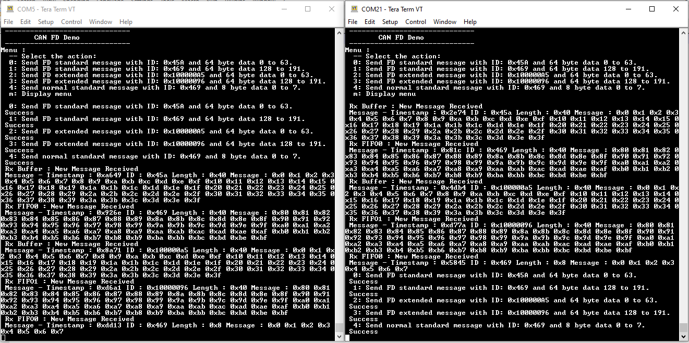

CAN FD interrupt
This example application shows how to use the CAN module to transmit and receive CAN FD messages in interrupt mode.
Description
This application transmits CAN FD message to CAN Bus and receives CAN FD message from CAN Bus. To run this application, two evaluation boards of same type are required. These boards acts as different nodes on the CAN bus. Same application is programmed onto both the boards. Boards are connected to PC via UART. While running the application, user can send and receive CAN FD messages between the boards using UART console applications running on the PC.
Downloading and building the application
To clone or download this application from Github, go to the main page of this repository and then click Clone button to clone this repository or download as zip file. This content can also be downloaded using content manager by following these instructions.
Path of the application within the repository is apps/can/can_fd_operation_interrupt_timestamp/firmware .
To build the application, refer to the following table and open the project using its IDE.
| Project Name | Description |
|---|---|
| sam_c21n_xpro.X | MPLABX project for SAMC21N Xplained Pro Evaluation Kit |
Setting up the hardware
The following table shows the target hardware for the application projects.
| Project Name | Board |
|---|---|
| sam_c21n_xpro.X | SAMC21N Xplained Pro Evaluation Kit |
Setting up SAMC21N Xplained Pro Evaluation Kit
-
Connect SAMC21N Xplained Pro Evaluation Kit to another SAMC21N Xplained Pro Evaluation Kit as per the pin connections shown below
SAMC21N XPRO - 1 SAMC21N XPRO - 2 CANH, CAN 1 CANH, CAN 1 CANL, CAN 1 CANL, CAN 1 GND, EXT1 PIN19 GND, EXT1 PIN19 -
Connect the Debug USB port on the board to the computer using a micro USB cable
Running the Application
- Open the Terminal application (Ex.:Tera term) on the computer
- Connect to the EDBG Virtual COM port and configure the serial settings as follows:
- Baud : 115200
- Data : 8 Bits
- Parity : None
- Stop : 1 Bit
- Flow Control : None
- Build and Program the application using its IDE
- In the console associated with board 2, press “0” to receive a CAN FD message
- In the console associated with board 1, press “2” to transmit a CAN FD message
- Transmitted message description and status will be displayed in the console window of board 1
- Received message will be displayed in the console window of board 2
- Follow the sequence below to send and receive different messages:
- Press ‘1’ on board 2 and Press ‘3’ on board 1
- Press ‘4’ on board 2 and Press ‘6’ on board 1
- Press ‘5’ on board 2 and Press ‘7’ on board 1
- Press ‘1’ on board 2 and Press ‘a’ on board 1
- If the steps are executed in this sequence, the final output in the consoles will be as below (console on the left is the transmitter (board 1) and the one on the right is receiver (board 2)):
